Flux 対応 おすすめLoRA一覧
対応モデルごとに分類されたLoRA一覧です。各カテゴリーを選択してください。全 985 ファイル。
loras (1)
Flux (168)
Illustrious (196)
Pony (104)
SD1.5 (264)
SDXL (23)
Unknown (124)
WanVideo (106)
Flux (100 items on this page / Total 168 items)
Flux
全般
3D_Cartoon_Vision_flux_v1
「3D_Cartoon_Vision_flux_v1」に特化した追加学習モデルです。Stable DiffusionでのAI画像生成にLoRAを導入し、特定要素の再現性を劇的に向上。効率的かつ高品質なビジュアルを求める全てのAI絵師必見のモデルです。
Size: 1,374,819,344 bytes
Flux
全般
47aa7885c1b04c74588ddb80dc804c9c
「47aa7885c1b04c74588ddb80dc804c9c」に特化した追加学習モデルです。Stable DiffusionでのAI画像生成にLoRAを導入し、特定要素の再現性を劇的に向上。効率的かつ高品質なビジュアルを求める全てのAI絵師必見のモデルです。
Size: 153,271,888 bytes
Flux
全般
80sAnime
「80sAnime」に特化した追加学習モデルです。Stable DiffusionでのAI画像生成にLoRAを導入し、特定要素の再現性を劇的に向上。効率的かつ高品質なビジュアルを求める全てのAI絵師必見のモデルです。
Size: 306,433,024 bytes
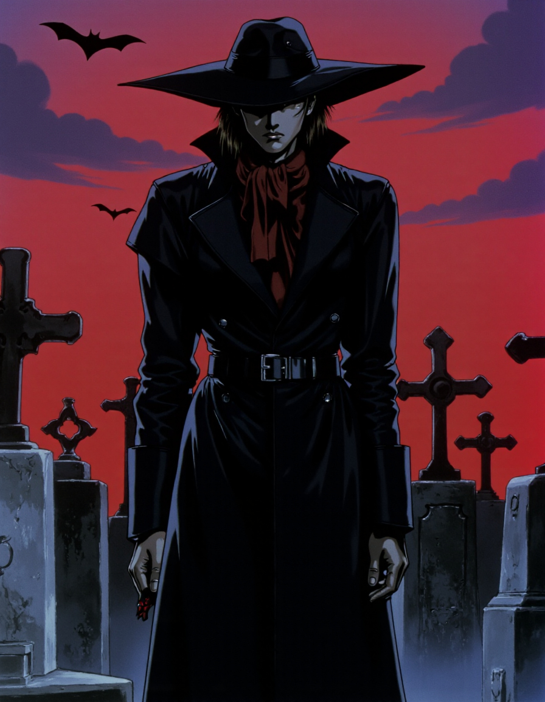
Flux
全般
90s_Retro_Anime_-_FLUX-000009
「90s_Retro_Anime_-_FLUX-000009」に特化した追加学習モデルです。Stable DiffusionでのAI画像生成にLoRAを導入し、特定要素の再現性を劇的に向上。効率的かつ高品質なビジュアルを求める全てのAI絵師必見のモデルです。
Size: 19,265,192 bytes
Flux
全般
AddMicroDetails_Flux1Dev_v1
「AddMicroDetails_Flux1Dev_v1」に特化した追加学習モデルです。Stable DiffusionでのAI画像生成にLoRAを導入し、特定要素の再現性を劇的に向上。効率的かつ高品質なビジュアルを求める全てのAI絵師必見のモデルです。
Size: 134,551,260 bytes
Flux
全般
adjusting_legwear_flux_v2
「adjusting_legwear_flux_v2」に特化した追加学習モデルです。Stable DiffusionでのAI画像生成にLoRAを導入し、特定要素の再現性を劇的に向上。効率的かつ高品質なビジュアルを求める全てのAI絵師必見のモデルです。
Size: 19,266,184 bytes
Flux
全般
aerith_v2.0
「aerith_v2.0」に特化した追加学習モデルです。Stable DiffusionでのAI画像生成にLoRAを導入し、特定要素の再現性を劇的に向上。効率的かつ高品質なビジュアルを求める全てのAI絵師必見のモデルです。
Size: 171,969,460 bytes
Flux
全般
aesthetical-000003
「aesthetical-000003」に特化した追加学習モデルです。Stable DiffusionでのAI画像生成にLoRAを導入し、特定要素の再現性を劇的に向上。効率的かつ高品質なビジュアルを求める全てのAI絵師必見のモデルです。
Size: 19,350,512 bytes
Flux
全般
al.24
「al.24」に特化した追加学習モデルです。Stable DiffusionでのAI画像生成にLoRAを導入し、特定要素の再現性を劇的に向上。効率的かつ高品質なビジュアルを求める全てのAI絵師必見のモデルです。
Size: 153,264,992 bytes

Flux
全般
Amanogawa Kirara FLUX V2
「Amanogawa Kirara FLUX V2」に特化した追加学習モデルです。Stable DiffusionでのAI画像生成にLoRAを導入し、特定要素の再現性を劇的に向上。効率的かつ高品質なビジュアルを求める全てのAI絵師必見のモデルです。
Size: 67,287,108 bytes
Flux
全般
animeflux_lora
「animeflux_lora」に特化した追加学習モデルです。Stable DiffusionでのAI画像生成にLoRAを導入し、特定要素の再現性を劇的に向上。効率的かつ高品質なビジュアルを求める全てのAI絵師必見のモデルです。
Size: 153,297,520 bytes
Flux
全般
animescapev1
「animescapev1」に特化した追加学習モデルです。Stable DiffusionでのAI画像生成にLoRAを導入し、特定要素の再現性を劇的に向上。効率的かつ高品質なビジュアルを求める全てのAI絵師必見のモデルです。
Size: 343,805,448 bytes
Flux
全般
animescreencap_flux_v1_2000
「animescreencap_flux_v1_2000」に特化した追加学習モデルです。Stable DiffusionでのAI画像生成にLoRAを導入し、特定要素の再現性を劇的に向上。効率的かつ高品質なビジュアルを求める全てのAI絵師必見のモデルです。
Size: 171,969,368 bytes
Flux
全般
Anime_detail_eye
「Anime_detail_eye」に特化した追加学習モデルです。Stable DiffusionでのAI画像生成にLoRAを導入し、特定要素の再現性を劇的に向上。効率的かつ高品質なビジュアルを求める全てのAI絵師必見のモデルです。
Size: 153,281,704 bytes
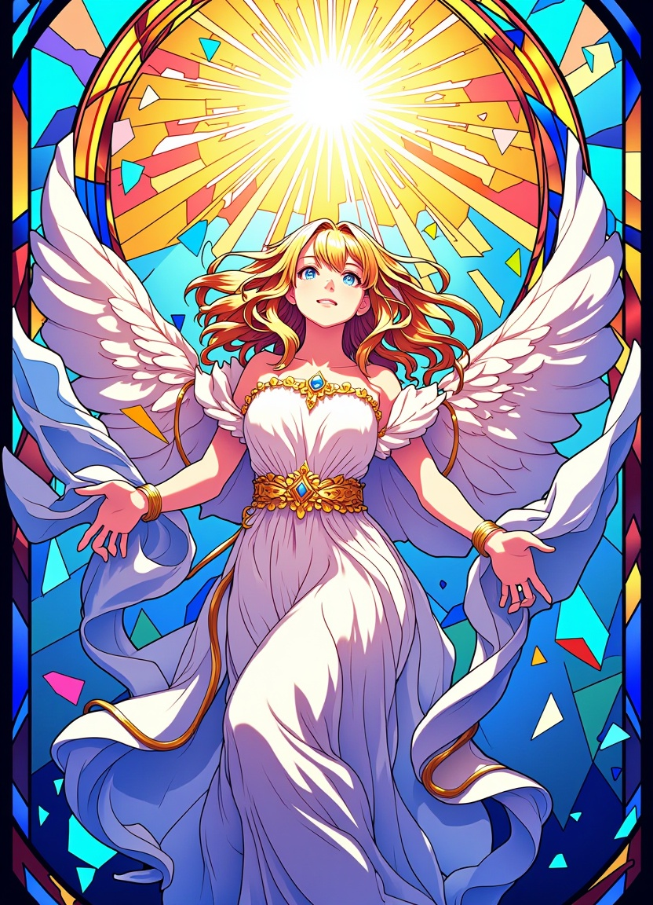
Flux
全般
anime_stained_glass_v1.0
「anime_stained_glass_v1.0」に特化した追加学習モデルです。Stable DiffusionでのAI画像生成にLoRAを導入し、特定要素の再現性を劇的に向上。効率的かつ高品質なビジュアルを求める全てのAI絵師必見のモデルです。
Size: 2,360,864 bytes
Flux
全般
anime_v1_000019000
「anime_v1_000019000」に特化した追加学習モデルです。Stable DiffusionでのAI画像生成にLoRAを導入し、特定要素の再現性を劇的に向上。効率的かつ高品質なビジュアルを求める全てのAI絵師必見のモデルです。
Size: 343,805,384 bytes
Flux
全般
AniVerse_flux_lora_01
「AniVerse_flux_lora_01」に特化した追加学習モデルです。Stable DiffusionでのAI画像生成にLoRAを導入し、特定要素の再現性を劇的に向上。効率的かつ高品質なビジュアルを求める全てのAI絵師必見のモデルです。
Size: 687,476,640 bytes
Flux
全般
Asian_Beauty
「Asian_Beauty」に特化した追加学習モデルです。Stable DiffusionでのAI画像生成にLoRAを導入し、特定要素の再現性を劇的に向上。効率的かつ高品質なビジュアルを求める全てのAI絵師必見のモデルです。
Size: 89,745,224 bytes
Flux
全般
asuka-langley-soryuu-classic-flux-lora-nochekaiser
「asuka-langley-soryuu-classic-flux-lora-nochekaiser」に特化した追加学習モデルです。Stable DiffusionでのAI画像生成にLoRAを導入し、特定要素の再現性を劇的に向上。効率的かつ高品質なビジュアルを求める全てのAI絵師必見のモデルです。
Size: 19,275,840 bytes

Flux
全般
BowFlux-000001
「BowFlux-000001」に特化した追加学習モデルです。Stable DiffusionでのAI画像生成にLoRAを導入し、特定要素の再現性を劇的に向上。効率的かつ高品質なビジュアルを求める全てのAI絵師必見のモデルです。
Size: 89,745,224 bytes

Flux
全般
Card Captor Sakura Anime_FLUX
「Card Captor Sakura Anime_FLUX」に特化した追加学習モデルです。Stable DiffusionでのAI画像生成にLoRAを導入し、特定要素の再現性を劇的に向上。効率的かつ高品質なビジュアルを求める全てのAI絵師必見のモデルです。
Size: 79,378,664 bytes
Flux
全般
CatalystStyleFlux
「CatalystStyleFlux」に特化した追加学習モデルです。Stable DiffusionでのAI画像生成にLoRAを導入し、特定要素の再現性を劇的に向上。効率的かつ高品質なビジュアルを求める全てのAI絵師必見のモデルです。
Size: 19,293,944 bytes

Flux
全般
CFlux Anime V1
「CFlux Anime V1」に特化した追加学習モデルです。Stable DiffusionでのAI画像生成にLoRAを導入し、特定要素の再現性を劇的に向上。効率的かつ高品質なビジュアルを求める全てのAI絵師必見のモデルです。
Size: 171,969,488 bytes
Flux
全般
Chun-Li_Classic_V1.0
「Chun-Li_Classic_V1.0」に特化した追加学習モデルです。Stable DiffusionでのAI画像生成にLoRAを導入し、特定要素の再現性を劇的に向上。効率的かつ高品質なビジュアルを求める全てのAI絵師必見のモデルです。
Size: 38,405,328 bytes
Flux
全般
Chun-Li_rank8_bf16-step04000
「Chun-Li_rank8_bf16-step04000」に特化した追加学習モデルです。Stable DiffusionでのAI画像生成にLoRAを導入し、特定要素の再現性を劇的に向上。効率的かつ高品質なビジュアルを求める全てのAI絵師必見のモデルです。
Size: 33,664,220 bytes
Flux
全般
CitronAnimeTreasureFlux
「CitronAnimeTreasureFlux」に特化した追加学習モデルです。Stable DiffusionでのAI画像生成にLoRAを導入し、特定要素の再現性を劇的に向上。効率的かつ高品質なビジュアルを求める全てのAI絵師必見のモデルです。
Size: 38,428,488 bytes
Flux
全般
ck-flaani-flux
「ck-flaani-flux」に特化した追加学習モデルです。Stable DiffusionでのAI画像生成にLoRAを導入し、特定要素の再現性を劇的に向上。効率的かつ高品質なビジュアルを求める全てのAI絵師必見のモデルです。
Size: 171,969,483 bytes

Flux
全般
clear_note
「clear_note」に特化した追加学習モデルです。Stable DiffusionでのAI画像生成にLoRAを導入し、特定要素の再現性を劇的に向上。効率的かつ高品質なビジュアルを求める全てのAI絵師必見のモデルです。
Size: 38,547,208 bytes

Flux
全般
colorfulasiangirl-lora-r128-v1
「colorfulasiangirl-lora-r128-v1」に特化した追加学習モデルです。Stable DiffusionでのAI画像生成にLoRAを導入し、特定要素の再現性を劇的に向上。効率的かつ高品質なビジュアルを求める全てのAI絵師必見のモデルです。
Size: 1,225,339,640 bytes
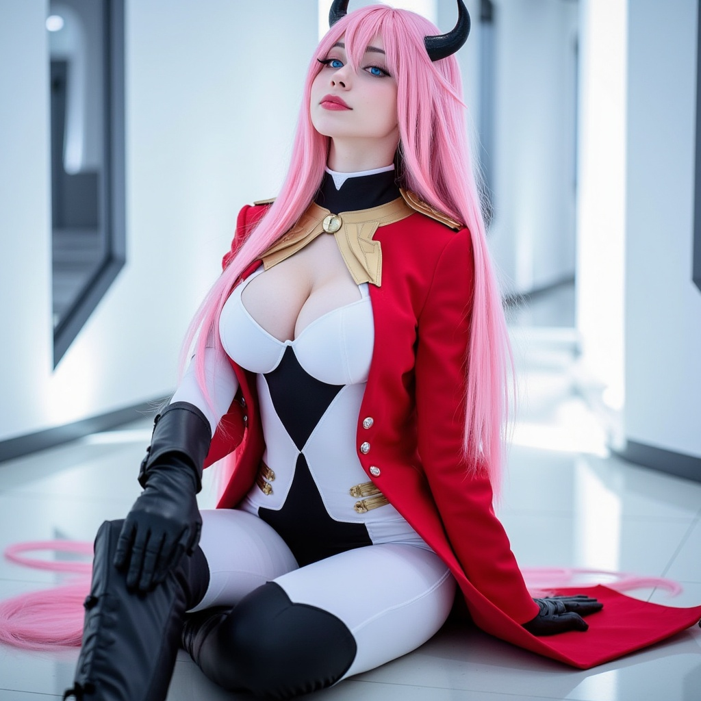
Flux
全般
cosplay1
「cosplay1」に特化した追加学習モデルです。Stable DiffusionでのAI画像生成にLoRAを導入し、特定要素の再現性を劇的に向上。効率的かつ高品質なビジュアルを求める全てのAI絵師必見のモデルです。
Size: 171,969,473 bytes
Flux
全般
cosplay_flux_V1
「cosplay_flux_V1」に特化した追加学習モデルです。Stable DiffusionでのAI画像生成にLoRAを導入し、特定要素の再現性を劇的に向上。効率的かつ高品質なビジュアルを求める全てのAI絵師必見のモデルです。
Size: 298,119,008 bytes
Flux
全般
CurtsyFlux
「CurtsyFlux」に特化した追加学習モデルです。Stable DiffusionでのAI画像生成にLoRAを導入し、特定要素の再現性を劇的に向上。効率的かつ高品質なビジュアルを求める全てのAI絵師必見のモデルです。
Size: 38,419,072 bytes
Flux
全般
datanimestyle1000
「datanimestyle1000」に特化した追加学習モデルです。Stable DiffusionでのAI画像生成にLoRAを導入し、特定要素の再現性を劇的に向上。効率的かつ高品質なビジュアルを求める全てのAI絵師必見のモデルです。
Size: 153,271,848 bytes
Flux
全般
DragonToonFlux_epoch_5
「DragonToonFlux_epoch_5」に特化した追加学習モデルです。Stable DiffusionでのAI画像生成にLoRAを導入し、特定要素の再現性を劇的に向上。効率的かつ高品質なビジュアルを求める全てのAI絵師必見のモデルです。
Size: 19,262,224 bytes
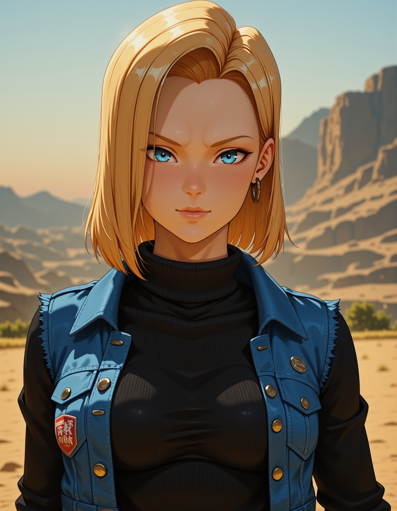
Flux
全般
Dragon_Ball_Z_-_Android_18
「Dragon_Ball_Z_-_Android_18」に特化した追加学習モデルです。Stable DiffusionでのAI画像生成にLoRAを導入し、特定要素の再現性を劇的に向上。効率的かつ高品質なビジュアルを求める全てのAI絵師必見のモデルです。
Size: 38,460,304 bytes
Flux
全般
eduardo-flux
「eduardo-flux」に特化した追加学習モデルです。Stable DiffusionでのAI画像生成にLoRAを導入し、特定要素の再現性を劇的に向上。効率的かつ高品質なビジュアルを求める全てのAI絵師必見のモデルです。
Size: 38,408,840 bytes
Flux
全般
Eris_Greyrat
「Eris_Greyrat」に特化した追加学習モデルです。Stable DiffusionでのAI画像生成にLoRAを導入し、特定要素の再現性を劇的に向上。効率的かつ高品質なビジュアルを求める全てのAI絵師必見のモデルです。
Size: 19,257,912 bytes

Flux
全般
Ethereal Eastern mix
「Ethereal Eastern mix」に特化した追加学習モデルです。Stable DiffusionでのAI画像生成にLoRAを導入し、特定要素の再現性を劇的に向上。効率的かつ高品質なビジュアルを求める全てのAI絵師必見のモデルです。
Size: 1,838,004,640 bytes
Flux
全般
evangelion_asuka_langley_flux_v1_2-000010
「evangelion_asuka_langley_flux_v1_2-000010」に特化した追加学習モデルです。Stable DiffusionでのAI画像生成にLoRAを導入し、特定要素の再現性を劇的に向上。効率的かつ高品質なビジュアルを求める全てのAI絵師必見のモデルです。
Size: 16,861,076 bytes
Flux
全般
evangelion_ayanami_rei_flux_v1_2-000008
「evangelion_ayanami_rei_flux_v1_2-000008」に特化した追加学習モデルです。Stable DiffusionでのAI画像生成にLoRAを導入し、特定要素の再現性を劇的に向上。効率的かつ高品質なビジュアルを求める全てのAI絵師必見のモデルです。
Size: 16,861,132 bytes

Flux
全般
expression_helper_ANIME
「expression_helper_ANIME」に特化した追加学習モデルです。Stable DiffusionでのAI画像生成にLoRAを導入し、特定要素の再現性を劇的に向上。効率的かつ高品質なビジュアルを求める全てのAI絵師必見のモデルです。
Size: 612,923,992 bytes
Flux
全般
FayeValentine_rank8_bf16-step03000
「FayeValentine_rank8_bf16-step03000」に特化した追加学習モデルです。Stable DiffusionでのAI画像生成にLoRAを導入し、特定要素の再現性を劇的に向上。効率的かつ高品質なビジュアルを求める全てのAI絵師必見のモデルです。
Size: 33,664,244 bytes
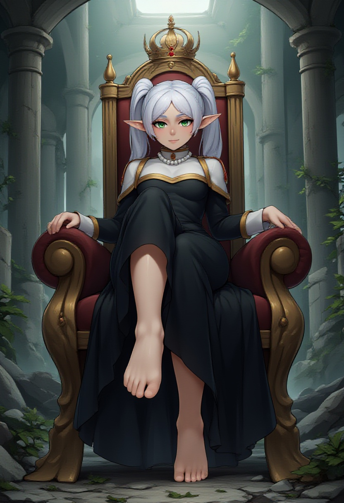
Flux
全般
feet_anime_flux_v1
「feet_anime_flux_v1」に特化した追加学習モデルです。Stable DiffusionでのAI画像生成にLoRAを導入し、特定要素の再現性を劇的に向上。効率的かつ高品質なビジュアルを求める全てのAI絵師必見のモデルです。
Size: 306,440,432 bytes
Flux
全般
figure
「figure」に特化した追加学習モデルです。Stable DiffusionでのAI画像生成にLoRAを導入し、特定要素の再現性を劇的に向上。効率的かつ高品質なビジュアルを求める全てのAI絵師必見のモデルです。
Size: 153,295,264 bytes
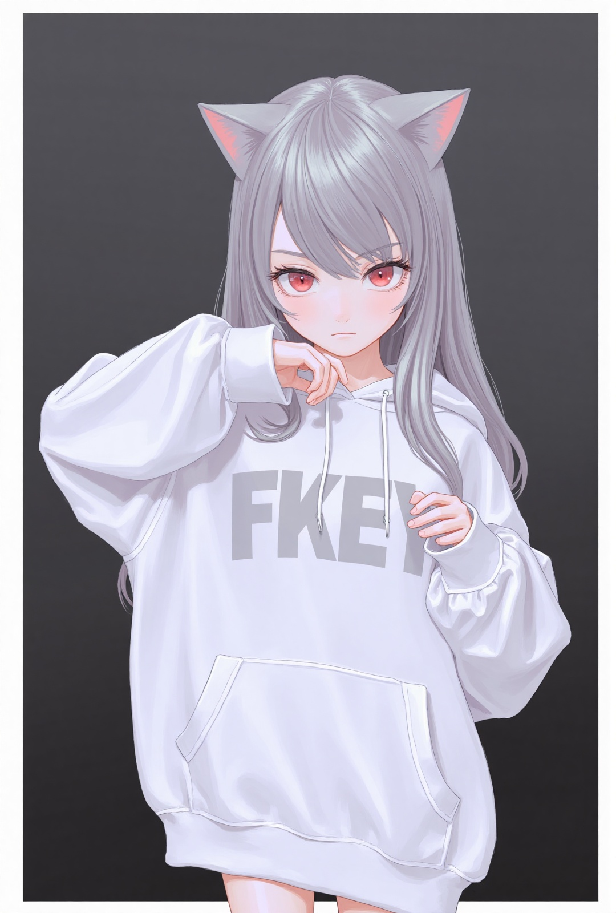
Flux
全般
fkey_flux_v3_t5_clip-l
「fkey_flux_v3_t5_clip-l」に特化した追加学習モデルです。Stable DiffusionでのAI画像生成にLoRAを導入し、特定要素の再現性を劇的に向上。効率的かつ高品質なビジュアルを求める全てのAI絵師必見のモデルです。
Size: 217,028,232 bytes
Flux
全般
flat-illus-flux-v1
「flat-illus-flux-v1」に特化した追加学習モデルです。Stable DiffusionでのAI画像生成にLoRAを導入し、特定要素の再現性を劇的に向上。効率的かつ高品質なビジュアルを求める全てのAI絵師必見のモデルです。
Size: 67,280,620 bytes
Flux
全般
flat_colour_anime_style_v3.4
「flat_colour_anime_style_v3.4」に特化した追加学習モデルです。Stable DiffusionでのAI画像生成にLoRAを導入し、特定要素の再現性を劇的に向上。効率的かつ高品質なビジュアルを求める全てのAI絵師必見のモデルです。
Size: 171,969,412 bytes
Flux
全般
FLUXTASTIC_V3
「FLUXTASTIC_V3」に特化した追加学習モデルです。Stable DiffusionでのAI画像生成にLoRAを導入し、特定要素の再現性を劇的に向上。効率的かつ高品質なビジュアルを求める全てのAI絵師必見のモデルです。
Size: 687,476,504 bytes
Flux
全般
Flux_Asuka_2_cosplay_costume_v1
「Flux_Asuka_2_cosplay_costume_v1」に特化した追加学習モデルです。Stable DiffusionでのAI画像生成にLoRAを導入し、特定要素の再現性を劇的に向上。効率的かつ高品質なビジュアルを求める全てのAI絵師必見のモデルです。
Size: 261,685,306 bytes
Flux
全般
FLUX_Black_Magic_XL_Style_V2.0-000005
「FLUX_Black_Magic_XL_Style_V2.0-000005」に特化した追加学習モデルです。Stable DiffusionでのAI画像生成にLoRAを導入し、特定要素の再現性を劇的に向上。効率的かつ高品質なビジュアルを求める全てのAI絵師必見のモデルです。
Size: 19,292,920 bytes
Flux
全般
flux_frieren_v2alpha
「flux_frieren_v2alpha」に特化した追加学習モデルです。Stable DiffusionでのAI画像生成にLoRAを導入し、特定要素の再現性を劇的に向上。効率的かつ高品質なビジュアルを求める全てのAI絵師必見のモデルです。
Size: 19,296,496 bytes
Flux
全般
Flux_Honkai3rd_Elysia_cosplay_costume_v1
「Flux_Honkai3rd_Elysia_cosplay_costume_v1」に特化した追加学習モデルです。Stable DiffusionでのAI画像生成にLoRAを導入し、特定要素の再現性を劇的に向上。効率的かつ高品質なビジュアルを求める全てのAI絵師必見のモデルです。
Size: 261,686,634 bytes
Flux
全般
Flux_idol_costume_style4_v2
「Flux_idol_costume_style4_v2」に特化した追加学習モデルです。Stable DiffusionでのAI画像生成にLoRAを導入し、特定要素の再現性を劇的に向上。効率的かつ高品質なビジュアルを求める全てのAI絵師必見のモデルです。
Size: 261,685,706 bytes
Flux
全般
Flux_Japanese_JK_SchoolUniform_style1_v2
「Flux_Japanese_JK_SchoolUniform_style1_v2」に特化した追加学習モデルです。Stable DiffusionでのAI画像生成にLoRAを導入し、特定要素の再現性を劇的に向上。効率的かつ高品質なビジュアルを求める全てのAI絵師必見のモデルです。
Size: 153,274,072 bytes
Flux
全般
Flux_JiraiKeiOutfit_style6_v2
「Flux_JiraiKeiOutfit_style6_v2」に特化した追加学習モデルです。Stable DiffusionでのAI画像生成にLoRAを導入し、特定要素の再現性を劇的に向上。効率的かつ高品質なビジュアルを求める全てのAI絵師必見のモデルです。
Size: 261,685,186 bytes
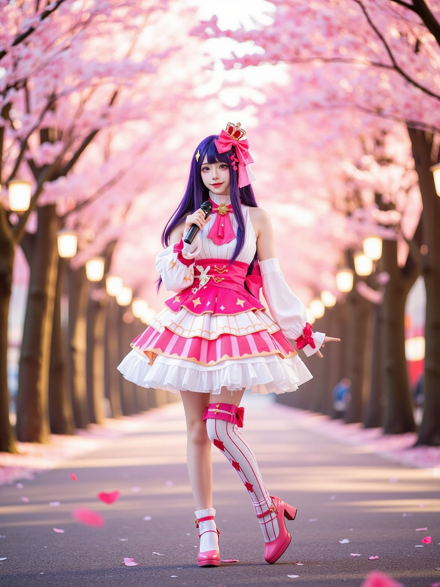
Flux
全般
Flux_Oshi-no-Ko_HoshinoAi_2_cosplay_costume_v1
「Flux_Oshi-no-Ko_HoshinoAi_2_cosplay_costume_v1」に特化した追加学習モデルです。Stable DiffusionでのAI画像生成にLoRAを導入し、特定要素の再現性を劇的に向上。効率的かつ高品質なビジュアルを求める全てのAI絵師必見のモデルです。
Size: 261,685,114 bytes
Flux
全般
FLUX_Style7646888135v2Dim16
「FLUX_Style7646888135v2Dim16」に特化した追加学習モデルです。Stable DiffusionでのAI画像生成にLoRAを導入し、特定要素の再現性を劇的に向上。効率的かつ高品質なビジュアルを求める全てのAI絵師必見のモデルです。
Size: 153,268,840 bytes
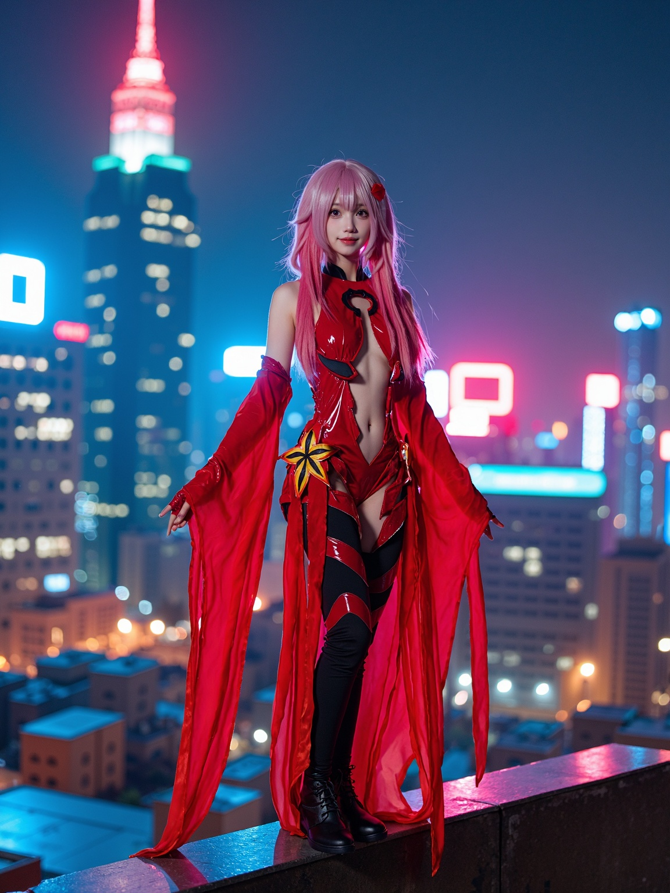
Flux
全般
flux_Yuzuriha_Inori_cosplay_costume_v1
「flux_Yuzuriha_Inori_cosplay_costume_v1」に特化した追加学習モデルです。Stable DiffusionでのAI画像生成にLoRAを導入し、特定要素の再現性を劇的に向上。効率的かつ高品質なビジュアルを求める全てのAI絵師必見のモデルです。
Size: 153,273,480 bytes

Flux
全般
Flux__Semi-realistic_art_style-000004
「Flux__Semi-realistic_art_style-000004」に特化した追加学習モデルです。Stable DiffusionでのAI画像生成にLoRAを導入し、特定要素の再現性を劇的に向上。効率的かつ高品質なビジュアルを求める全てのAI絵師必見のモデルです。
Size: 19,256,912 bytes

Flux
全般
FLUX｜Ancient girl manga style-Cassiopeia_TypeA
「FLUX｜Ancient girl manga style-Cassiopeia_TypeA」に特化した追加学習モデルです。Stable DiffusionでのAI画像生成にLoRAを導入し、特定要素の再現性を劇的に向上。効率的かつ高品質なビジュアルを求める全てのAI絵師必見のモデルです。
Size: 153,396,112 bytes
Flux
全般
flyx3_FLUX_v2
「flyx3_FLUX_v2」に特化した追加学習モデルです。Stable DiffusionでのAI画像生成にLoRAを導入し、特定要素の再現性を劇的に向上。効率的かつ高品質なビジュアルを求める全てのAI絵師必見のモデルです。
Size: 79,384,744 bytes
Flux
全般
fre-000019
「fre-000019」に特化した追加学習モデルです。Stable DiffusionでのAI画像生成にLoRAを導入し、特定要素の再現性を劇的に向上。効率的かつ高品質なビジュアルを求める全てのAI絵師必見のモデルです。
Size: 19,261,480 bytes
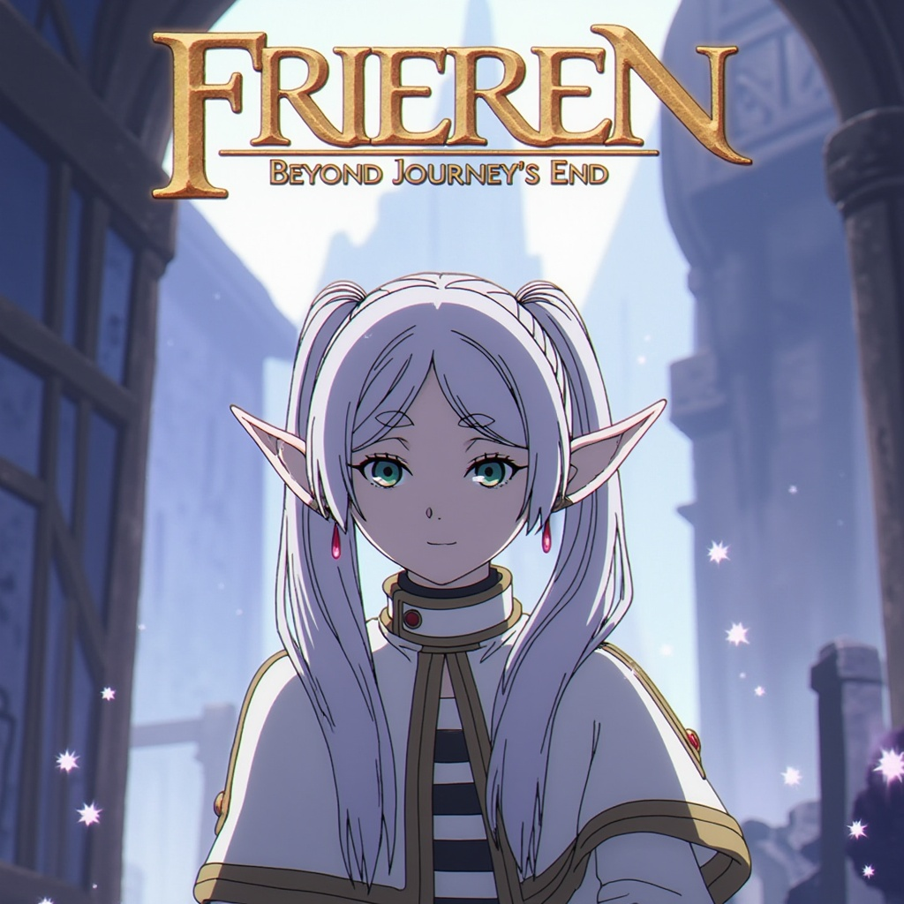
Flux
全般
Frieren1_flux1
「Frieren1_flux1」に特化した追加学習モデルです。Stable DiffusionでのAI画像生成にLoRAを導入し、特定要素の再現性を劇的に向上。効率的かつ高品質なビジュアルを求める全てのAI絵師必見のモデルです。
Size: 343,805,459 bytes
Flux
全般
GF2style-flux
「GF2style-flux」に特化した追加学習モデルです。Stable DiffusionでのAI画像生成にLoRAを導入し、特定要素の再現性を劇的に向上。効率的かつ高品質なビジュアルを求める全てのAI絵師必見のモデルです。
Size: 19,265,432 bytes
Flux
全般
Ghost_In_The_Shell_Flux
「Ghost_In_The_Shell_Flux」に特化した追加学習モデルです。Stable DiffusionでのAI画像生成にLoRAを導入し、特定要素の再現性を劇的に向上。効率的かつ高品質なビジュアルを求める全てのAI絵師必見のモデルです。
Size: 57,562,304 bytes

Flux
全般
gun girl with gun style v1
「gun girl with gun style v1」に特化した追加学習モデルです。Stable DiffusionでのAI画像生成にLoRAを導入し、特定要素の再現性を劇的に向上。効率的かつ高品質なビジュアルを求める全てのAI絵師必見のモデルです。
Size: 306,463,808 bytes
Flux
全般
Hanfu_NSFW_epoch_18
「Hanfu_NSFW_epoch_18」に特化した追加学習モデルです。Stable DiffusionでのAI画像生成にLoRAを導入し、特定要素の再現性を劇的に向上。効率的かつ高品質なビジュアルを求める全てのAI絵師必見のモデルです。
Size: 19,568,856 bytes
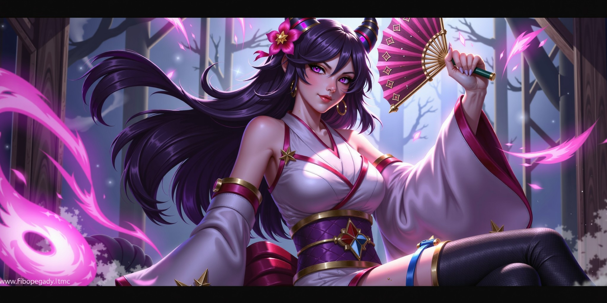
Flux
全般
heziFLUXE9A38EE6A0BCE6ACA7E7BE8E.9S8D
「heziFLUXE9A38EE6A0BCE6ACA7E7BE8E.9S8D」に特化した追加学習モデルです。Stable DiffusionでのAI画像生成にLoRAを導入し、特定要素の再現性を劇的に向上。効率的かつ高品質なビジュアルを求める全てのAI絵師必見のモデルです。
Size: 612,746,584 bytes
Flux
全般
hinaFluxAnimeStyle_v3
「hinaFluxAnimeStyle_v3」に特化した追加学習モデルです。Stable DiffusionでのAI画像生成にLoRAを導入し、特定要素の再現性を劇的に向上。効率的かつ高品質なビジュアルを求める全てのAI絵師必見のモデルです。
Size: 165,070,470 bytes
Flux
全般
hinaYukiSuou_flux_v2
「hinaYukiSuou_flux_v2」に特化した追加学習モデルです。Stable DiffusionでのAI画像生成にLoRAを導入し、特定要素の再現性を劇的に向上。効率的かつ高品質なビジュアルを求める全てのAI絵師必見のモデルです。
Size: 306,552,896 bytes

Flux
全般
Hito komoru_FLUX
「Hito komoru_FLUX」に特化した追加学習モデルです。Stable DiffusionでのAI画像生成にLoRAを導入し、特定要素の再現性を劇的に向上。効率的かつ高品質なビジュアルを求める全てのAI絵師必見のモデルです。
Size: 79,381,568 bytes
Flux
全般
Houkisei_Style_v10_[Stable]_(QuantDweller)
「Houkisei_Style_v10_[Stable]_(QuantDweller)」に特化した追加学習モデルです。Stable DiffusionでのAI画像生成にLoRAを導入し、特定要素の再現性を劇的に向上。効率的かつ高品質なビジュアルを求める全てのAI絵師必見のモデルです。
Size: 199,033,036 bytes
Flux
全般
hourglassv32_FLUX
「hourglassv32_FLUX」に特化した追加学習モデルです。Stable DiffusionでのAI画像生成にLoRAを導入し、特定要素の再現性を劇的に向上。効率的かつ高品質なビジュアルを求める全てのAI絵師必見のモデルです。
Size: 306,464,488 bytes
Flux
全般
How_do_you_do_fellow_kids_FLUX
「How_do_you_do_fellow_kids_FLUX」に特化した追加学習モデルです。Stable DiffusionでのAI画像生成にLoRAを導入し、特定要素の再現性を劇的に向上。効率的かつ高品質なビジュアルを求める全てのAI絵師必見のモデルです。
Size: 19,258,976 bytes
Flux
全般
igawaFlux
「igawaFlux」に特化した追加学習モデルです。Stable DiffusionでのAI画像生成にLoRAを導入し、特定要素の再現性を劇的に向上。効率的かつ高品質なビジュアルを求める全てのAI絵師必見のモデルです。
Size: 19,269,376 bytes
Flux
全般
Illyasviel-Flux-v1
「Illyasviel-Flux-v1」に特化した追加学習モデルです。Stable DiffusionでのAI画像生成にLoRAを導入し、特定要素の再現性を劇的に向上。効率的かつ高品質なビジュアルを求める全てのAI絵師必見のモデルです。
Size: 171,969,432 bytes
Flux
全般
japanese-school-uniform-sailorfuku-v1-r10e2-flux1-dev
「japanese-school-uniform-sailorfuku-v1-r10e2-flux1-dev」に特化した追加学習モデルです。Stable DiffusionでのAI画像生成にLoRAを導入し、特定要素の再現性を劇的に向上。効率的かつ高品質なビジュアルを求める全てのAI絵師必見のモデルです。
Size: 153,271,648 bytes
Flux
全般
Jiraikei_Fashion_Flux
「Jiraikei_Fashion_Flux」に特化した追加学習モデルです。Stable DiffusionでのAI画像生成にLoRAを導入し、特定要素の再現性を劇的に向上。効率的かつ高品質なビジュアルを求める全てのAI絵師必見のモデルです。
Size: 67,358,092 bytes
Flux
全般
kantoku_flux_v1
「kantoku_flux_v1」に特化した追加学習モデルです。Stable DiffusionでのAI画像生成にLoRAを導入し、特定要素の再現性を劇的に向上。効率的かつ高品質なビジュアルを求める全てのAI絵師必見のモデルです。
Size: 153,536,648 bytes

Flux
全般
Kanzaki Hiro_FLUX
「Kanzaki Hiro_FLUX」に特化した追加学習モデルです。Stable DiffusionでのAI画像生成にLoRAを導入し、特定要素の再現性を劇的に向上。効率的かつ高品質なビジュアルを求める全てのAI絵師必見のモデルです。
Size: 79,392,984 bytes
Flux
全般
kolorsasianface-flux1d
「kolorsasianface-flux1d」に特化した追加学習モデルです。Stable DiffusionでのAI画像生成にLoRAを導入し、特定要素の再現性を劇的に向上。効率的かつ高品質なビジュアルを求める全てのAI絵師必見のモデルです。
Size: 39,757,536 bytes

Flux
全般
Konosuba Flux v1-2
「Konosuba Flux v1-2」に特化した追加学習モデルです。Stable DiffusionでのAI画像生成にLoRAを導入し、特定要素の再現性を劇的に向上。効率的かつ高品質なビジュアルを求める全てのAI絵師必見のモデルです。
Size: 306,449,672 bytes
Flux
全般
korean_neurocanvas_v1
「korean_neurocanvas_v1」に特化した追加学習モデルです。Stable DiffusionでのAI画像生成にLoRAを導入し、特定要素の再現性を劇的に向上。効率的かつ高品質なビジュアルを求める全てのAI絵師必見のモデルです。
Size: 171,969,432 bytes
Flux
全般
latexmaid_flux_v1
「latexmaid_flux_v1」に特化した追加学習モデルです。Stable DiffusionでのAI画像生成にLoRAを導入し、特定要素の再現性を劇的に向上。効率的かつ高品質なビジュアルを求める全てのAI絵師必見のモデルです。
Size: 171,968,936 bytes

Flux
全般
Little Devil Dress
「Little Devil Dress」に特化した追加学習モデルです。Stable DiffusionでのAI画像生成にLoRAを導入し、特定要素の再現性を劇的に向上。効率的かつ高品質なビジュアルを求める全てのAI絵師必見のモデルです。
Size: 261,687,842 bytes
Flux
全般
lora_pastel_anime_flux
「lora_pastel_anime_flux」に特化した追加学習モデルです。Stable DiffusionでのAI画像生成にLoRAを導入し、特定要素の再現性を劇的に向上。効率的かつ高品質なビジュアルを求める全てのAI絵師必見のモデルです。
Size: 171,969,510 bytes
Flux
全般
Lum__Urusei_Yatsura_2022_Flux_LoRa
「Lum__Urusei_Yatsura_2022_Flux_LoRa」に特化した追加学習モデルです。Stable DiffusionでのAI画像生成にLoRAを導入し、特定要素の再現性を劇的に向上。効率的かつ高品質なビジュアルを求める全てのAI絵師必見のモデルです。
Size: 19,266,432 bytes
Flux
全般
lxy_000009000
「lxy_000009000」に特化した追加学習モデルです。Stable DiffusionでのAI画像生成にLoRAを導入し、特定要素の再現性を劇的に向上。効率的かつ高品質なビジュアルを求める全てのAI絵師必見のモデルです。
Size: 171,969,328 bytes
Flux
全般
majicbeauty1
「majicbeauty1」に特化した追加学習モデルです。Stable DiffusionでのAI画像生成にLoRAを導入し、特定要素の再現性を劇的に向上。効率的かつ高品質なビジュアルを求める全てのAI絵師必見のモデルです。
Size: 153,264,992 bytes
Flux
全般
MarniePokemonFlux
「MarniePokemonFlux」に特化した追加学習モデルです。Stable DiffusionでのAI画像生成にLoRAを導入し、特定要素の再現性を劇的に向上。効率的かつ高品質なビジュアルを求める全てのAI絵師必見のモデルです。
Size: 19,285,648 bytes
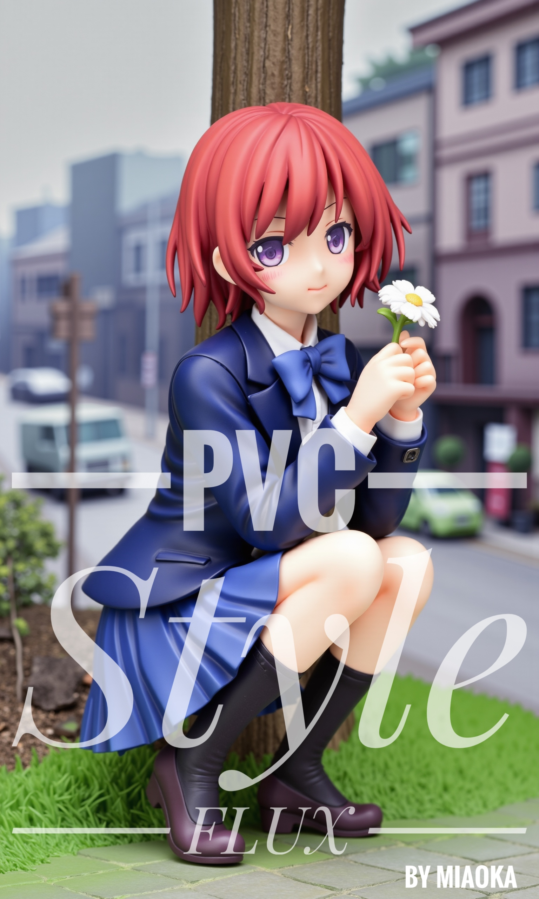
Flux
全般
MiaoKaPVC_flux
「MiaoKaPVC_flux」に特化した追加学習モデルです。Stable DiffusionでのAI画像生成にLoRAを導入し、特定要素の再現性を劇的に向上。効率的かつ高品質なビジュアルを求める全てのAI絵師必見のモデルです。
Size: 307,396,648 bytes
Flux
全般
Mirko
「Mirko」に特化した追加学習モデルです。Stable DiffusionでのAI画像生成にLoRAを導入し、特定要素の再現性を劇的に向上。効率的かつ高品質なビジュアルを求める全てのAI絵師必見のモデルです。
Size: 19,263,952 bytes
Flux
全般
Mistoon_Anime_Flux
「Mistoon_Anime_Flux」に特化した追加学習モデルです。Stable DiffusionでのAI画像生成にLoRAを導入し、特定要素の再現性を劇的に向上。効率的かつ高品質なビジュアルを求める全てのAI絵師必見のモデルです。
Size: 19,262,320 bytes

Flux
全般
Mitsuha Miyamizu_40
「Mitsuha Miyamizu_40」に特化した追加学習モデルです。Stable DiffusionでのAI画像生成にLoRAを導入し、特定要素の再現性を劇的に向上。効率的かつ高品質なビジュアルを求める全てのAI絵師必見のモデルです。
Size: 153,307,864 bytes
Flux
全般
modern-anime-lora-2
「modern-anime-lora-2」に特化した追加学習モデルです。Stable DiffusionでのAI画像生成にLoRAを導入し、特定要素の再現性を劇的に向上。効率的かつ高品質なビジュアルを求める全てのAI絵師必見のモデルです。
Size: 153,272,832 bytes
Flux
全般
modern-anime-style
「modern-anime-style」に特化した追加学習モデルです。Stable DiffusionでのAI画像生成にLoRAを導入し、特定要素の再現性を劇的に向上。効率的かつ高品質なビジュアルを求める全てのAI絵師必見のモデルです。
Size: 343,805,400 bytes

Flux
全般
Modern-Retro_Anime-FLUX
「Modern-Retro_Anime-FLUX」に特化した追加学習モデルです。Stable DiffusionでのAI画像生成にLoRAを導入し、特定要素の再現性を劇的に向上。効率的かつ高品質なビジュアルを求める全てのAI絵師必見のモデルです。
Size: 19,256,928 bytes
Flux
全般
muk_flux_v1
「muk_flux_v1」に特化した追加学習モデルです。Stable DiffusionでのAI画像生成にLoRAを導入し、特定要素の再現性を劇的に向上。効率的かつ高品質なビジュアルを求める全てのAI絵師必見のモデルです。
Size: 153,506,232 bytes
Flux
全般
murata
「murata」に特化した追加学習モデルです。Stable DiffusionでのAI画像生成にLoRAを導入し、特定要素の再現性を劇的に向上。効率的かつ高品質なビジュアルを求める全てのAI絵師必見のモデルです。
Size: 19,267,752 bytes
Flux
全般
Nebris_flux1_v2-000070
「Nebris_flux1_v2-000070」に特化した追加学習モデルです。Stable DiffusionでのAI画像生成にLoRAを導入し、特定要素の再現性を劇的に向上。効率的かつ高品質なビジュアルを求める全てのAI絵師必見のモデルです。
Size: 33,667,336 bytes